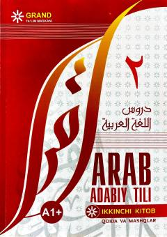

AAArab tili grammatikasi va mashqlarini o'rgatuvchi ikkinchi daraja qo'llanmasi.
Ushbu o'quv qo'llanma 'Arab adabiy tili' silsilasining ikkinchi kitobi bo'lib, grammatik qoidalar va mashqlarni o'z ichiga oladi. Nodavlat ta'lim muassasalari tinglovchilari, maktab o'quvchilari va oliy ta'lim talabalari uchun mo'ljallangan. Kitobda birlik, muzakkar va muannas jins, ko'plik shakllari, dialoglar va lug'at qismi berilgan.